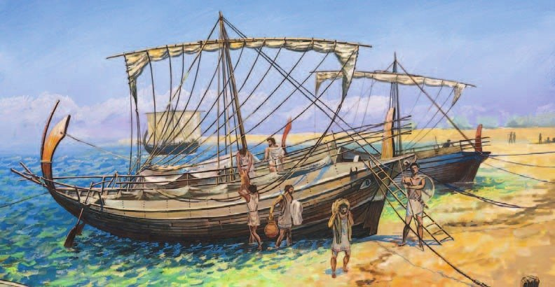
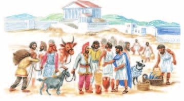
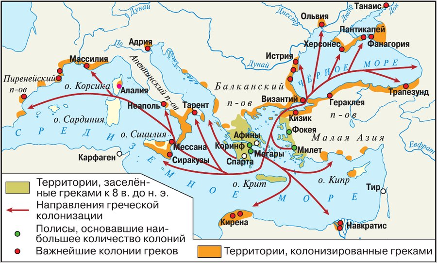
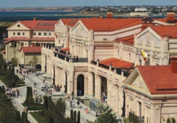
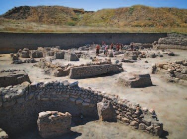

Причины колонизации
Пахотной земли в Греции мало, а людей становилось всё больше. Всем нужна еда, прежде всего хлеб. Земли мало, людей слишком много — вот главные причины : греки стали переселяться в другие земли.
У каждого была своя мечта. Разорившийся земледелец хотел свой участок земли. Бедняк — работу. Ремесленник — новых покупателей. Многие надеялись быстро разбогатеть. А некоторые знатные уезжали, потому что проиграли борьбу за власть и боялись за свою жизнь.
Была и причина за пределами Греции. В конце VIII века до н. э. усилилась Ассирия (§15) и подорвала торговлю финикийцев (§13). Греки этим воспользовались и забрали себе часть морских торговых путей.
Переселение шло с VIII по VI век до н. э. Его называют Великой греческой колонизацией.
Древняя Греция не имела большого количества пахотной земли. Быстро растущему населению страны требовались продукты питания, в частности главный — хлеб. Острая нехватка земли и перенаселение были главными причинами колонизации — переселения в другие земли. Благодаря колонизации из полиса уходило избыточное население.
Разорившиеся земледельцы мечтали о приобретении собственного надела земли, бедняки — о работе, которая давала бы средства к существованию, ремесленники — о расширении спроса на свои товары. Греки переселялись в другие земли, рассчитывая быстро разбогатеть. Покидали родину и потерпевшие поражение в политической борьбе представители знати, боявшиеся преследования и опасавшиеся за свою жизнь.
Были и другие причины греческой колонизации. Возвышение Ассирии в конце VIII (8) века до н. э. подорвало торговлю финикийцев. Греческие города получили возможность захватить часть морских торговых путей.
- Выдели внутренние и внешние причины греческой колонизации.
1. Свяжи главную причину колонизации с природой Греции из §20.
2. Почему беда финикийцев оказалась на руку грекам?
Организация колоний
Переселенцы плыли за купцами — по морским путям, которые те уже разведали: по Средиземному морю и к Чёрному.
Сначала выбирали главного — . В пути его слушались во всём, а на новом месте он становился главой поселения.
Перед дальней и опасной дорогой приносили жертвы богам своего полиса. И брали с собой с родного алтаря — кусочек дома. Как ты берёшь в долгую поездку любимые камни и мягкие игрушки.
Прибыв на место, переселенцы — а плыли только мужчины — основывали . Выбирали защищённое место с удобной гаванью. Делили землю под город и поля на равные участки. Строили стены, потом храмы и дома.
Колонию устраивали так же, как родной полис. А родной полис называли — «полис-мать». С ней дружили, но колония была самостоятельной и метрополии не подчинялась. Жили колонисты по обычаям родной Эллады.
Местных жителей, которые не говорили по-гречески, греки звали : их речь звучала для греков как «бар-бар». Но с варварами активно торговали.
Желавшие переселиться отправлялись вслед за купцами по уже освоенным морским путям на новые земли в Средиземноморье и Причерноморье. Сначала выбирали руководителя экспедиции. Его называли ойкист. Во время путешествия он пользовался неограниченной властью, а затем становился главой нового поселения. Перед далёким и опасным путешествием покидавшие родные места приносили жертвы богам — покровителям полиса, брали с собой священный огонь с родных алтарей и затем грузили на корабль свои пожитки и отплывали в поисках новой жизни.
Прибыв на новое место, переселенцы, а это были только мужчины, основывали поселение, которое называлось «колония». Для её организации выбирали защищённое место с удобной гаванью. Затем колонисты определяли место строительства нового города. После этого делили на равные участки городскую землю и поля. Вокруг будущего города возводили прочные стены и начинали строить храмы и дома.
Греки обустраивали колонии подобно тем полисам, которые они покидали. Полис, основавший колонию, назывался по отношению к ней метрополией (буквально «полис-мать»), с которой жители новых поселений поддерживали дружеские отношения. Но колонии были самостоятельными государствами и не зависели от метрополии. При этом уклад жизни греков вдали от родины не менялся. Они сохраняли традиции и обычаи родной Эллады.
Греки, обосновываясь на новом месте, знакомились с местными племенами. Всех, кто не говорил по-гречески, называли варварами из-за непонятного бормотания, похожего на звуки «бар-бар». Эллины и варвары активно торговали друг с другом.

- Сравни жизнь греков в колонии и метрополии. В чём сходство? В чём различия?
3. Почему для колонии искали место именно с удобной гаванью? Свяжи с тем, чем колония потом жила.
4. Колония и метрополия — как мама и взрослая дочь. Почему такое сравнение подходит?
5. «Варвар» — это значит «дикарь»? Что на самом деле значило это слово у греков?

▲ Найди на карте и покажи основные направления греческой колонизации.
Направления колонизации и её значение
Колонизация шла три века — с VIII по VI век до н. э. — в разные стороны. Смотри на карту: красные стрелки.
На запад — в Италию и на Сицилию. Колоний там стало так много, что весь этот край прозвали .
На юг и восток почти не плыли: там только Кирена в Северной Африке и Навкратис в Египте.
На северо-восток — больше всего! Через проливы к Чёрному морю. Греки звали его — «Гостеприимное море».
Много колоний появилось на северном берегу Чёрного моря — там, где теперь Россия. Один только Милет основал 75 колоний! Самые ранние — Пантикапей (сейчас Керчь), Фанагория (у посёлка Сенной в Краснодарском крае), Феодосия (Крым), Горгиппия (сейчас Анапа), Гермонасса (станица Тамань). Это одни из самых древних городов России. Сначала там жили только греки, потом они смешались с местными.
Самый большой греческий город в Крыму — Пантикапей. Позже он стал столицей Боспорского царства — о нём в §25.
стоял там, где сейчас Севастополь. Колонисты выращивали зерно, виноград и овощи, разводили овец и коз. Археологи нашли тут театр, монетный двор, храмы и дома. А самой северной колонией был Танаис — в устье Дона.
Торговля стала международной. Изделия греков покупали и на западе, и на востоке. В Грецию везли хлеб и ценную рыбу. Торговали и рабами.
— самый большой античный город в России. Её основали в середине VI века до н. э., и простояла она до начала X века н. э. — почти полторы тысячи лет! Город стоял на плодородных землях Таманского полуострова и возил хлеб в Грецию, особенно в Афины. От нападений варваров он защищал, а в мирное время был центром торговли.
Потом веками местные жители брали руины Фанагории как каменоломню: таскали камень на стройки, а мрамор пережигали на известь. Ценить эти древности начали только в конце XVIII века, когда Тамань вошла в состав России. Настоящие раскопки начались в советское время, а в 2014 году здесь открыли музей-заповедник «Фанагория».
«Великая греческая колонизация» продолжалась с VIII (8) по VI (6) век до н. э. Колонизация развивалась по нескольким направлениям.
На западе греческие колонии появились на побережье Италии и Сицилии, весь этот район стал называться Великой Грецией. На южном и восточном берегах Средиземного моря практически не было греческих колоний, исключение составляли Кирена в Северной Африке и Навкратис в Египте. Наиболее активно греки осваивали северо-восточное направление: северное побережье Средиземного моря, зону черноморских проливов и побережье Чёрного моря, которое они называли Понт Эвксинский (Гостеприимное море).
Множество колоний эллины основали в Северном Причерноморье, на исторической территории России. Только Милету приписывалось основание 75 колоний на берегу Чёрного моря. Самыми ранними колониями в Северном Причерноморье стали Пантикапей (ныне — Керчь), Фанагория (близ п. Сенной Краснодарского края), Феодосия (Крым), Горгиппия (современная Анапа), Гермонасса (станица Тамань Краснодарского края) — одни из древнейших городов в России. Первоначально в колониях проживали только греки. Постепенно население практически во всех колониях стало смешанным с местными жителями.
Самым крупным созданным в Крыму городом был Пантикапей. После расширения своих территорий по обе стороны пролива Боспор Киммерийский он стал столицей Боспорского царства.
Любопытные детали. У многих колоний, основанных греками, были говорящие названия, например: Феодосия — «дар богов», Кепы — «сады», Ольвия — дословно «счастливая, богатая», Херсонес — «полуостров».
Город, основанный на полуострове Гераклея («земля Геракла»), колонисты назвали Херсонес. Они выращивали сельскохозяйственные культуры: злаковые, виноград, овощи и разводили мелкий скот. Херсонес находился на территории современного города русской славы Севастополя. Археологи обнаружили здесь остатки театра, монетного двора, храмов и жилищ. Самой северной колонией был Танаис, основанный в устье Дона.
Греческая торговля приобрела международный характер. Ремесленные изделия эллинов пользовались спросом на западном и восточном рынках. В Грецию поступал привозной хлеб и другие продукты питания, в частности рыба ценных пород. Шла и работорговля.
Фанагория — крупнейший античный город на территории России — была основана в середине VI (6) века до н. э. и просуществовала до начала X (10) века н. э. С момента своего основания она была независимым полисом, но позднее вошла в состав Боспорского царства.
Фанагория находилась практически в центре Таманского полуострова среди плодородных земель и имела удобное сообщение как с местными племенами, так и с греческим миром по морю. Фанагория была одним из основных поставщиков хлеба в Грецию, в частности в Афины.
На протяжении своей долгой истории город играл важную роль во взаимоотношениях греков-боспорян с племенным миром, служа им надёжной защитой в случае нападений варваров, а также центром торговли в мирное время.
В течение многих веков фанагорийское поселение использовалось местными жителями в качестве каменоломни, откуда они добывали камень для строительства, а также мрамор для пережигания на известь. Лишь после вхождения Тамани в состав России в конце XVIII (18) века появилось осознание культурной ценности таманских древностей.
Подробнее. Подлинно научное археологическое исследование наземной и затопленной части Фанагории началось в советское время. В результате раскопок были обнаружены фундаменты общественных и жилых зданий, архитектурные детали, фрагменты античной скульптуры, монетные клады, керамика, произведения ювелирного искусства и надписи. Последние имеют исключительное значение для реконструкции истории Фанагории, так как они уточняют даты, проясняют детали многих событий и подтверждают сообщения источников. В 2014 г. здесь был создан государственный музей-заповедник «Фанагория».


- Найди на карте и покажи основные направления греческой колонизации.
6. Почему греков так тянуло к Чёрному морю? Свяжи с причинами колонизации из раздела 1.
7. Сколько лет простояла Фанагория? Посчитай по датам.
Подведём итоги
- Какие цели преследовали будущие колонисты?
- Как складывались отношения колонистов с метрополией?
- Найди на карте, назови и покажи города, основанные древними греками на территории современной России.
Во время раскопок в греческой колонии Херсонес на берегу Чёрного моря археологи нашли мраморную плиту, на которой сохранился текст присяги жителей этого древнего города.
«Клянусь Зевсом, Геей, Гелиосом, богами и богинями олимпийскими, героями, владеющими городом…
Я буду думать только о спасении и свободе государства и граждан и не предам Херсонеса…
Я не буду выступать против демократии…
Я буду служить народу и советовать ему наилучшее и наиболее справедливое для государства и граждан…»
Сформулируй ответ на главный вопрос параграфа — какими были результаты Великой греческой колонизации для Древней Греции и народов Средиземноморья? Приведи два-три довода.
Проверь себя
Нажимай по очереди — от самого древнего к самому близкому к нам. Осторожно: тут и до нашей эры, и наша.
1. Что было главной причиной колонизации?
2. Как называли руководителя переселенцев?
3. Что такое метрополия?
4. Кого греки называли варварами?
5. Как греки называли Чёрное море?
6. Какая колония стояла на месте нынешнего Севастополя?
Расскажи вслух
Почему греки уплывали из родных полисов
- Главное: мало пахотной земли, много людей, не хватает хлеба.
- У каждого своя мечта: земля, работа, покупатели, богатство; проигравшие знатные спасались.
- Снаружи: в конце VIII века до н. э. Ассирия подорвала торговлю финикийцев — греки заняли морские пути.
Как основывали колонию
- Выбирали ойкиста, приносили жертвы богам, брали священный огонь с родного алтаря.
- Искали защищённое место с удобной гаванью, делили землю на равные участки, строили стены, храмы, дома.
- Колония — самостоятельна, но дружит с метрополией; с варварами торгуют.
Куда плыли греки
- На запад — Италия и Сицилия, «Великая Греция».
- На юг и восток — почти никуда: только Кирена и Навкратис.
- Больше всего — на северо-восток, к Чёрному морю, Понту Эвксинскому.
Греческие города в России
- Пантикапей (Керчь), Феодосия, Херсонес (Севастополь), Горгиппия (Анапа), Гермонасса (Тамань), Танаис (устье Дона).
- Фанагория — самая большая; почти полторы тысячи лет; хлеб в Афины.
- Сейчас там музеи: «Херсонес Таврический», музей-заповедник «Фанагория».
Главный вопрос: результаты колонизации
- Для Греции: хлеб и ценная рыба из колоний, лишние люди нашли землю.
- Торговля стала международной: изделия греков покупали и на западе, и на востоке.
- Для других народов: торговля с греками, смешение с местными жителями, новые города — среди них древнейшие города России.